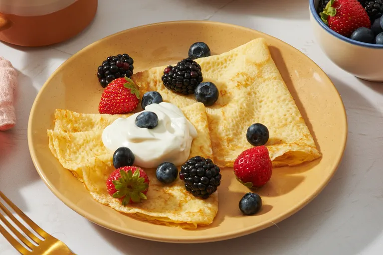

Description:
These homemade crepes are ultra thin and delicate with the most buttery crisp edges. Easy to make with just a blender and regular skillet, they’re ready for your choice of sweet or savory fillings and toppings.
Ingredients:
- Flour
- Eggs
- Milk
- Water
- Salt
- Butter
Steps:
- Whisk the milk, water, eggs, and salt.
- Gradually whisk in the flour and butter.
- Scoop the batter onto a hot griddle.
- Cook until lightly browned on the bottom.
- Flip and continue cooking until done on both sides.